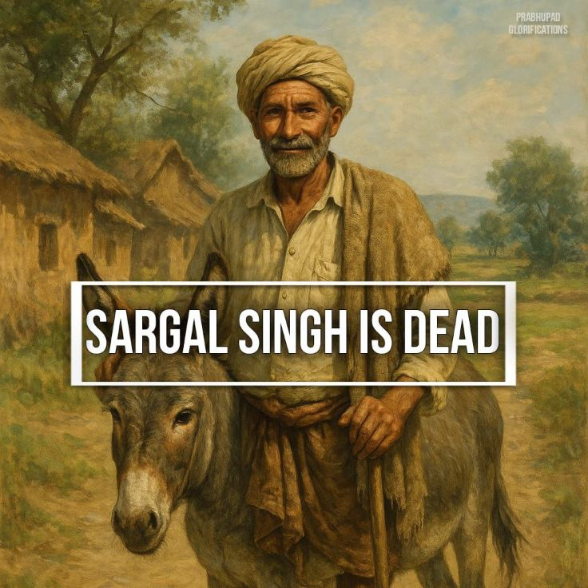

Sargal Singh is dead
Posted on : 3rd June, 2025

While we’re telling stories, here’s one more. Śrīla Prabhupāda told it, but I remember it as a skit performed at an ISKCON Sunday feast.¹
A man in the village had shaved his head, as one does when a relative dies, and was lamenting, “Sargal Singh is dead! Sargal Singh is dead!”
“Sargal Singh is dead?” asked the local grocer.
“Yes, he’s dead,” the man sobbed. “He was my dearest friend – so loyal, so faithful. He always just wanted to serve. And now... he’s dead!”
The grocer was so moved that he too shaved his head and began lamenting the death of Sargal Singh.
The word spread, men one after another shaved their heads, and soon the whole village was mourning the death of Sargal Singh, that great soul, so dear, so loyal, so faithful. But then one intelligent man asked, “Who’s Sargal Singh?” And no one knew.
So the question went back down the line: “Who’s Sargal Singh?” Each man asked the next, until finally the question reached the original mourner, a simple washerman, and it was discovered that Sargal Singh was the washerman’s ass.
And so it goes with kīrtana too. Misunderstandings, innovations, concoctions, tics, tricks, gimmicks, “wows,” flourishes, pretensions, dovetails, razzle-dazzles, trance inducers, imports from Vrindaban and Bollywood—all find their way into our kīrtana, and soon “This is what we’ve always done” and “This is what you’re supposed to do.”
Today’s trends and innovations and deviations may differ from those of tomorrow, but there’s always a new “cat in the basket,” and word keeps reaching us of the death of a new Sargal Singh. And so the need for this book.
¹July 1,1977 vrindavan, TKGs diary June 30, Prabhupāda Nectar vol. 2,p.48.
Ref ~ Śrīla Prabhupāda's Kirtana Standards a hand book by HH Jayādvaita swami, pg. 6
Jay Śrīla Prabhupāda!